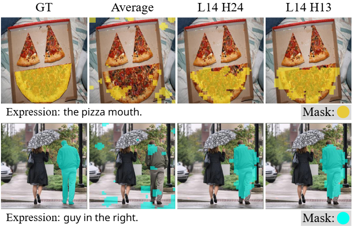

|
Jinyeong Kim
Hi, I'm an undergraduate student at Yonsei University, majoring in Medicine and AI. I am currently an intern at MICV Lab, working under the supervision of Prof. Seong Jae Hwang. My research interests include interpretability & explainability, clinical applications of AI, and multimodal models.
Email /
Scholar /
LinkedIn /
Github
|
|
Publications
|

|
Your Large Vision-Language Model Only Needs A Few Attention Heads For Visual Grounding
Seil Kang,
Jinyeong Kim,
Junhyeok Kim,
Seong Jae Hwang
CVPR, 2025
Our work discovers that a few attention heads in frozen LVLMs demonstrate strong visual grounding capabilities. These "localization heads" immediately enable training-free visual grounding, achieving performance comparable to fine-tuning approaches while providing better interpretability.
|
|
|
See What You Are Told: Visual Attention Sink in Large Multimodal Models
Seil Kang*,
Jinyeong Kim*,
Junhyeok Kim,
Seong Jae Hwang
ICLR, 2025
Large multimodal models consistently see irrelevant parts of the input. Our work demystifies this phenomenon, dubbed "visual attention sink," and proposes a simple mitigation strategy.
|
|
{kind=link}